Image Difference Captioning with Pre-Training and Contrastive Learning
Linli Yao, Weiying Wang, Qin Jin
abstract slide
The Image Difference Captioning (IDC) task aims to describe
the visual differences between two similar images with natural language. The major challenges of this task lie in two aspects: 1) fine-grained visual differences that require learning
stronger vision and language association and 2) high-cost of
manual annotations that leads to limited supervised data. To
address these challenges, we propose a new modeling framework following the pre-training-finetuning paradigm. Specifically, we design three self-supervised tasks and contrastive
learning strategies to align visual differences and text descriptions at a fine-grained level. Moreover, we propose a
data expansion strategy to utilize extra cross-task supervision
information, such as data for fine-grained image classification, to alleviate the limitation of available supervised IDC
data. Extensive experiments on two IDC benchmark datasets,
CLEVR-Change and Birds-to-Words, demonstrate the effectiveness of the proposed modeling framework. The codes and
models will be released at https://github.com/yaolinli/IDC.

Product-oriented Machine Translation with Cross-modal Cross-lingual Pre-training
Yuqing Song, Shizhe Chen, Qin Jin, Wei Luo, Jun Xie, and Fei Huang
abstract slide
Translating e-commercial product descriptions, a.k.a product-oriented
machine translation (PMT), is essential to serve e-shoppers all over
the world. However, due to the domain specialty, the PMT task is
more challenging than traditional machine translation problems.
Firstly, there are many specialized jargons in the product description, which are ambiguous to translate without the product image.
Secondly, product descriptions are related to the image in more
complicated ways than standard image descriptions, involving various visual aspects such as objects, shapes, colors or even subjective
styles. Moreover, existing PMT datasets are small in scale to support
the research. In this paper, we first construct a large-scale bilingual
product description dataset called Fashion-MMT, which contains
over 114k noisy and 40k manually cleaned description translations
with multiple product images. To effectively learn semantic alignments among product images and bilingual texts in translation,
we design a unified product-oriented cross-modal cross-lingual
model (UPOC2
) for pre-training and fine-tuning. Experiments on
the Fashion-MMT and Multi30k datasets show that our model significantly outperforms the state-of-the-art models even pre-trained on
the same dataset. It is also shown to benefit more from large-scale
noisy data to improve the translation quality. We will release the
dataset and codes at https://github.com/syuqings/Fashion-MMT.

Question-controlled Text-aware Image Captioning
Anwen Hu, Shizhe Chen, Qin Jin
abstract slide
For an image with multiple scene texts, different people may be
interested in different text information. Current text-aware image captioning models are not able to generate distinctive captions according to various information needs. To explore how to
generate personalized text-aware captions, we define a new challenging task, namely Question-controlled Text-aware Image Captioning (Qc-TextCap). With questions as control signals, this task
requires models to understand questions, find related scene texts
and describe them together with objects fluently in human language. Based on two existing text-aware captioning datasets, we
automatically construct two datasets, ControlTextCaps and ControlVizWiz to support the task. We propose a novel Geometry and
Question Aware Model (GQAM). GQAM first applies a Geometryinformed Visual Encoder to fuse region-level object features and
region-level scene text features with considering spatial relationships. Then, we design a Question-guided Encoder to select the
most relevant visual features for each question. Finally, GQAM
generates a personalized text-aware caption with a Multimodal
Decoder. Our model achieves better captioning performance and
question answering ability than carefully designed baselines on
both two datasets. With questions as control signals, our model
generates more informative and diverse captions than the stateof-the-art text-aware captioning model. Our code and datasets are
publicly available at https://github.com/HAWLYQ/Qc-TextCap.

Say as You Wish: Fine-grained Control of Image Caption Generation with Abstract Scene Graphs
Shizhe Chen, Qin Jin, Peng Wang, Qi Wu
abstract
Humans are able to describe image contents with coarse
to fine details as they wish. However, most image captioning models are intention-agnostic which cannot generate diverse descriptions according to different user intentions initiatively. In this work, we propose the Abstract
Scene Graph (ASG) structure to represent user intention
in fine-grained level and control what and how detailed
the generated description should be. The ASG is a directed graph consisting of three types of abstract nodes
(object, attribute, relationship) grounded in the image without any concrete semantic labels. Thus it is easy to obtain
either manually or automatically. From the ASG, we propose a novel ASG2Caption model, which is able to recognize user intentions and semantics in the graph, and therefore generate desired captions following the graph structure. Our model achieves better controllability conditioning on ASGs than carefully designed baselines on both VisualGenome and MSCOCO datasets. It also significantly
improves the caption diversity via automatically sampling
diverse ASGs as control signals. Code will be released at
https://github.com/cshizhe/asg2cap.

Fine-grained Video-Text Retrieval with Hierarchical Graph Reasoning
Shizhe Chen, Yida Zhao, Qin Jin, Qi Wu
abstract
Cross-modal retrieval between videos and texts has attracted growing attentions due to the rapid emergence of videos on the web. The current
dominant approach is to learn a joint embedding space to measure cross-modal similarities. However, simple embeddings are insufficient
to represent complicated visual and textual details, such as scenes, objects, actions and their compositions. To improve fine-grained
video-text retrieval, we propose a Hierarchical Graph Reasoning (HGR) model, which decomposes video-text matching into global-to-local
levels. The model disentangles text into a hierarchical semantic graph including three levels of events, actions, entities, and generates
hierarchical textual embeddings via attention-based graph reasoning. Different levels of texts can guide the learning of diverse and
hierarchical video representations for cross-modal matching to capture both global and local details. Experimental results on three
video-text datasets demonstrate the advantages of our model. Such hierarchical decomposition also enables better generalization across
datasets and improves the ability to distinguish fine-grained semantic differences. Code will be released
at https://github.com/cshizhe/hgr_v2t.
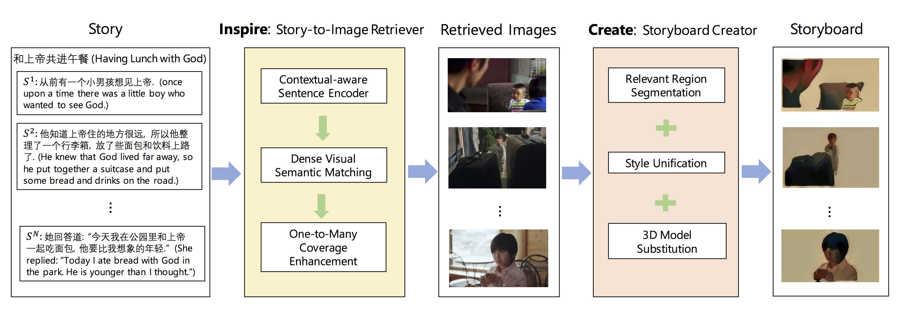
Neural Storyboard Artist: Visualizing Stories with Coherent Image Sequences
Shizhe Chen, Bei Liu, Jianlong Fu, Ruihua Song, Qin Jin, Pingping Lin, Xiaoyu Qi, Chunting Wang, Jin Zhou
abstract
A storyboard is a sequence of images to illustrate a story containing multiple sentences, which has been a key process
to create different story products. In this paper, we tackle a new multimedia task of automatic storyboard creation to
facilitate this process and inspire human artists. Inspired by the fact that our understanding of languages is based on
our past experience, we propose a novel inspire-and-create framework with a story-to-image retriever that selects relevant
cinematic images for inspiration and a storyboard creator that further refines and renders images to improve the relevancy
and visual consistency. The proposed retriever dynamically employs contextual information in the story with hierarchical
attentions and applies dense visual-semantic matching to accurately retrieve and ground images. The creator then employs
three rendering steps to increase the flexibility of retrieved images, which include erasing irrelevant regions, unifying
styles of images and substituting consistent characters. We carry out extensive experiments on both in-domain and
out-of-domain visual story datasets. The proposed model achieves better quantitative performance than the state-of-the-art
baselines for storyboard creation. Qualitative visualizations and user studies further verify that our approach can create
high-quality storyboards even for stories in the wild.
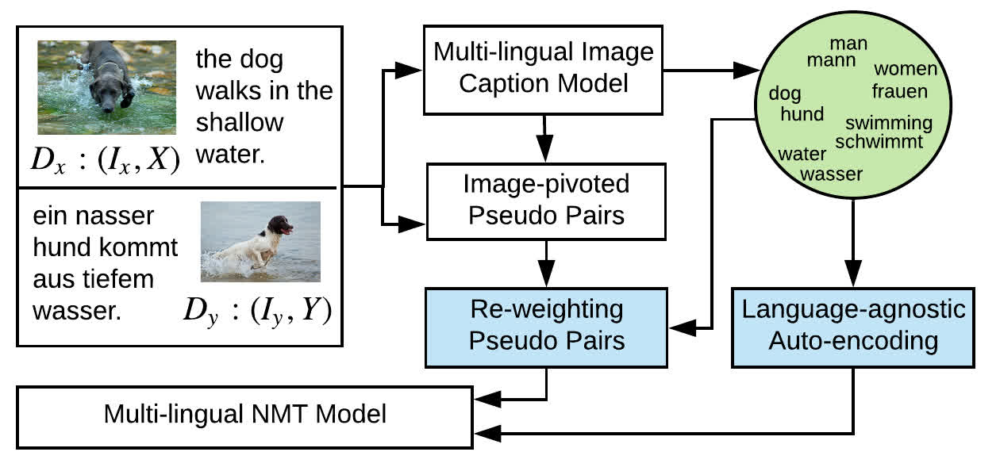
From words to sentence: A progressive learning approach for zero-resource machine translation with visual pivots
Shizhe Chen, Qin Jin, Jianlong Fu
abstract
The neural machine translation model has suffered from the lack of large-scale parallel corpora. In contrast, we
humans can learn multi-lingual translations even without parallel texts by referring our languages to the external
world. To mimic such human learning behavior, we employ images as pivots to enable zero-resource translation learning.
However, a picture tells a thousand words, which makes multi-lingual sentences pivoted by the same image noisy as mutual
translations and thus hinders the translation model learning. In this work, we propose a progressive learning approach
for image-pivoted zero-resource machine translation. Since words are less diverse when grounded in the image, we first
learn word-level translation with image pivots, and then progress to learn the sentence-level translation by utilizing
the learned word translation to suppress noises in image-pivoted multi-lingual sentences. Experimental results on two
widely used image-pivot translation datasets, IAPR-TC12 and Multi30k, show that the proposed approach significantly
outperforms other state-of-the-art methods.
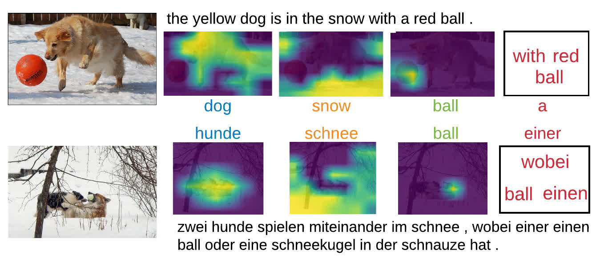
Unsupervised Bilingual Lexicon Induction from Mono-lingual Multimodal Data
Shizhe Chen, Qin Jin, Alexander Hauptmann
abstract
Bilingual lexicon induction, translating words from the source language to the target language, is a long-standing natural
language processing task. Recent endeavors prove that it is promising to employ images as pivot to learn the lexicon
induction without reliance on parallel corpora. However, these vision-based approaches simply associate words with entire
images, which are constrained to translate concrete words and require object-centered images. We humans can understand words
better when they are within a sentence with context. Therefore, in this paper, we propose to utilize images and their
associated captions to address the limitations of previous approaches. We propose a multi-lingual caption model trained
with different mono-lingual multimodal data to map words in different languages into joint spaces. Two types of word
representation are induced from the multi-lingual caption model: linguistic features and localized visual features.
The linguistic feature is learned from the sentence contexts with visual semantic constraints, which is beneficial to
learn translation for words that are less visual-relevant. The localized visual feature is attended to the region in the
image that correlates to the word, so that it alleviates the image restriction for salient visual representation. The two
types of features are complementary for word translation. Experimental results on multiple language pairs demonstrate the
effectiveness of our proposed method, which substantially outperforms previous vision-based approaches without using any
parallel sentences or supervision of seed word pairs.
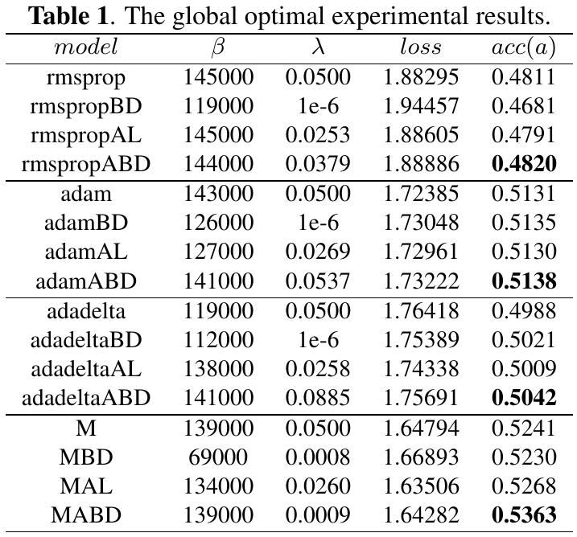
Momentum Based on Adaptive Bold Driver
Shengdong Li, Xueqiang Lv
abstract
The momentum-based stacked attention networks (SANs) is one of the best models for image question answering. However,
we find that it is easy to fall into the local optimal solution, which results in the higher question answering error
rate. To solve the problem, we propose adaptive bold driver (ABD). The experimental results and analysis show that it
outperforms the state-of-the-art global learning rate adaptive algorithm in the local learning rate adaptive stochastic
gradient descent (SGD). It is deeply integrated with momentum, and we propose momentum based on ABD (MABD). The experimental
results show that its accuracy is 2.33% higher than the baseline (momentum), 2.54% higher than momentum based on bold driver,
and 1.80% higher than the annealing-based momentum. The experimental analysis proves that it is the state-of-the-art optimization
algorithm in the SANs-based image question answering and it has effectiveness, significance, generalization performance,
and promotional value.
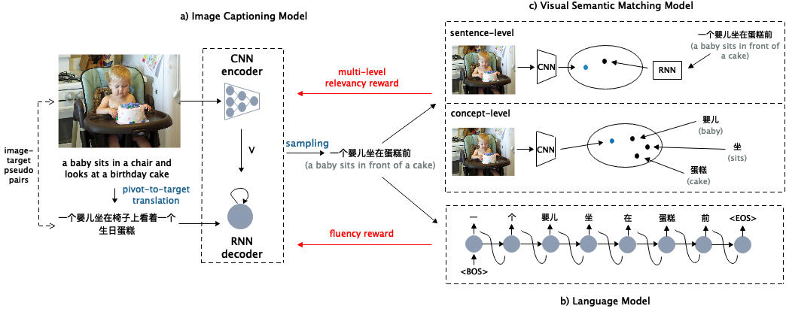
Unpaired Cross-lingual Image Caption Generation with Self-Supervised Rewards
Yuqing Song, Shizhe Chen, Yida Zhao, Qin Jin
abstract
Generating image descriptions in different languages is essential to satisfy users worldwide.
However, it is prohibitively expensive to collect large-scale paired image-caption dataset for every target language
which is critical for training descent image captioning models. Previous works tackle the unpaired cross-lingual image captioning problem through a pivot language, which is with the help of paired image-caption data in the pivot language and pivot-to- target machine translation models. However, such language-pivoted approach suffers from inaccuracy brought by the pivot-to-target translation, including disfluency and visual irrelevancy errors. In this paper, we propose to generate cross-lingual image captions with self-supervised rewards in the reinforcement learning framework to alleviate these two types of errors.
We employ self-supervision from mono-lingual corpus in the target language to provide fluency reward, and propose a multi-level visual semantic matching model to provide both sentence-level and concept-level visual relevancy rewards. We conduct extensive experiments for unpaired cross- lingual image captioning in both English and Chinese respectively on two widely used image caption corpora.
The proposed approach achieves significant performance improvement over state-of-the-art methods.
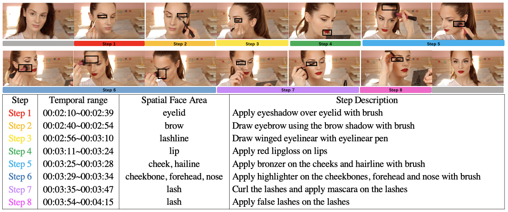
YouMakeup: A Large-Scale Domain-Specific Multimodal Dataset for Fine-Grained Semantic Comprehension
Weiying Wang, Yongcheng Wang, Shizhe Chen, Qin Jin
abstract
Multimodal semantic comprehension has attracted increasing research interests recently such as visual question answering
and caption generation. However, due to the data limitation, fine-grained semantic comprehension has not been well
investigated, which requires to capture semantic details of multimodal contents. In this work, we introduce “YouMakeup”,
a large-scale multimodal instructional video dataset to support fine-grained semantic comprehension research in specific
domain. YouMakeup contains 2,800 videos from YouTube, spanning more than 420 hours in total. Each video is annotated with
a sequence of natural language descriptions for instructional steps, grounded in temporal video range and spatial facial
areas. The annotated steps in a video involve subtle difference in actions, products and regions, which requires fine-grained
understanding and reasoning both temporally and spatially. In order to evaluate models' ability for fined-grained
comprehension, we further propose two groups of tasks including generation tasks and visual question answering from
different aspects. We also establish a baseline of step caption generation for future comparison. The dataset will be
publicly available at https://github. com/AIM3-RUC/YouMakeup to support research investigation in fine-grained semantic
comprehension.
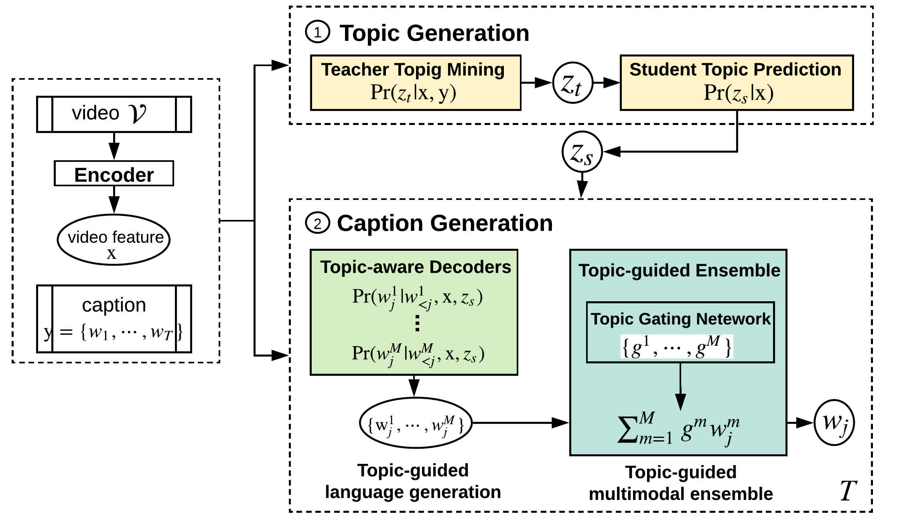
Generating Video Descriptions with Latent Topic Guidance
Shizhe Chen, Qin Jin, Jia Chen, Alexander Hauptman
abstract
Automatic video description generation (a.k.a video captioning) is one of the ultimate goals for video understanding.
Despite the wide range of applications such as video indexing and retrieval etc., the video captioning task remains quite
challenging due to the complexity and diversity of video content. First, open-domain videos cover a broad range of topics,
which results in highly variable vocabularies and expression styles to describe the video contents. Second, videos naturally
contain multiple modalities including image, motion, and acoustic media. The information provided by different modalities
differs in different conditions. In this paper, we propose a novel topic-guided video captioning model to address the
above-mentioned challenges in video captioning. Our model consists of two joint tasks, namely, latent topic generation and
topic-guided caption generation. The topic generation task aims to automatically predict the latent topic of the video.
Since there is no groundtruth topic information, we mine multimodal topics in an unsupervised fashion based on video contents
and annotated captions, and then distill the topic distribution to a topic prediction model. In the topic-guided generation
task, we employ the topic guidance for two purposes. The first is to narrow down the language complexity across topics, where
we propose the topic-aware decoder to leverage the latent topics to induce topic-related language models. The decoder is also
generic and can be integrated with a temporal attention mechanism. The second is to dynamically attend to important modalities
by topics, where we propose a flexible topic-guided multimodal ensemble framework and use the topic gating network to determine
the attention weights. The two tasks are correlated with each other, and they collaborate to generate more detailed and accurate
video captions. Our extensive experiments on two public benchmark datasets MSR-VTT and Youtube2Text demonstrate the effectiveness
of the proposed topic-guided video captioning system, which achieves state-of-the-art performance on both datasets.
Visual Relationship
Visual relationship detection is an intermediate image/video understanding task that detects two objects and classifies a predicate that explains the relationship between them.

Skeleton-based Interactive Graph Network for Human Object Interaction Detection
Sipeng Zheng, Shizhe Chen, Qin Jin
abstract
The human-object interaction detection (HOI) task aims to localize human and objects in an input image and predict their
relationships, which is essential for understanding human behaviors in complex scenes. Due to the human-centric nature of
the HOI task, it is beneficial to make use of human related knowledge such as human skeletons to infer fine-grained
human-object interactions. However, previous works simply embed skeletons via convolutional networks, which fail to capture
structured connections in human skeletons and ignore the object influence. In this work, we propose a Skeleton-based
Interactive Graph Network (SIGN) to capture fine-grained human-object interactions via encoding interactive graphs between
keypoints in human skeletons and object from spatial and appearance aspects. Experimental results demonstrate the
effectiveness of our SIGN model, which achieves significant improvement over baselines and outperforms other state-of-the-art
methods on two benchmarks.

Visual Relation Detection with Multi-Level Attention
Sipeng Zheng, Shizhe Chen, Qin Jin
abstract
Visual relations, which describe various types of interactions between two objects in the image, can provide
critical information for comprehensive semantic understanding of the image. Multiple cues related to the objects
can contribute to visual relation detection, which mainly include appearances, spacial locations and semantic
meanings. It is of great imporvr_zsptance to represent different cues and combine them effectively for visual relation
detection. However, in previous works, the appearance representation is simply realized by global visual
representation based on the bounding boxes of objects, which may not capture salient regions of the interaction
between two objects, and the different cue representations are equally concatenated without considering their
different contributions for different relations. In this work, we propose a multi-level attention visual relation
detection model (MLA-VRD), which generates salient appearance representation via a multi-stage appearance attention
strategy and adaptively combine different cues with different importance weighting via a multi-cue attention
strategy. Extensive experiment results on two widely used visual relation detection datasets, VRD and Visual Genome,
demonstrate the effectiveness of our proposed model which significantly outperforms the previous state-of-the-arts.
Our proposed model also achieves superior performance under the zero-shot learning condition, which is an important
ordeal for testing the generalization ability of visual relation detection models.
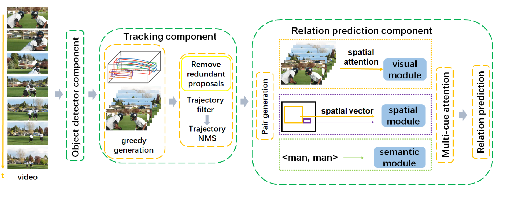
"Relation Understanding in Videos" ACM MM 2019 Grand Challenge
Sipeng Zheng, Xiangyu Chen, Shizhe Chen, Qin Jin
abstract
In this paper, we present our solutions to the `‘Relation Understanding in Videos’ challenge task.
Our model can be divided into 4 parts: 1) an object detector is used to obtain proposals of bounding boxes for
each frame. 2) a tracking module aims to generate trajectories based on proposals of bounding boxes. 3) the
relation module predicts the predicate given a pair of trajectories. 4) a sliding window module helps to locate
the endpoint frames of the relation triplet <subject, predicate, object> more precisely.
Affective Computing

Speech Emotion Recognition in Dyadic Dialogues with Attentive Interaction Modeling.
Jinming Zhao, Shizhe Chen, Jingjun Liang, Qin Jin
abstract
In dyadic human-human interactions, a more complex interaction scenario, a person's emotional state can be
influenced by both self emotional evolution and the interlocutor's behaviors. However, previous speech emotion
recognition studies infer the speaker's emotional state mainly based on the targeted speech segment without
considering the above two contextual factors. In this paper, we propose an Attentive Interaction Model (AIM)
to capture both self- and interlocutor-context to enhance the speech emotion recognition in the dyadic dialog.
The model learns to dynamically focus on long-term relevant contexts of the speaker and the interlocutor via the
self-attention mechanism and fuse the adaptive context with the present behavior to predict the current emotional
state. We carry out extensive experiments on the IEMOCAP corpus for dimensional emotion recognition in arousal and
valence. Our model achieves on par performance with baselines for arousal recognition and significantly outperforms
baselines for valence recognition, which demonstrates the effectiveness of the model to select useful con- texts for
emotion recognition in dyadic interactions.
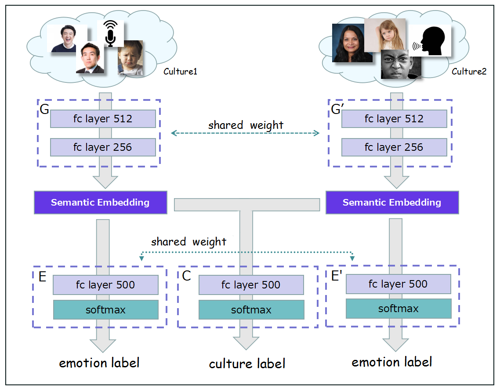
Cross-culture Multimodal Emotion Recognition with Adversarial Learning
Jingjun Liang, Shizhe Chen, Jinming Zhao, Qin Jin$, Haibo Liu, Li Lu
abstract
With the development of globalization, automatic emotion recognition has faced a new challenge in the multi-culture scenario
to generalize across different cultures. Previous works mainly rely on multi-cultural datasets to address the cross-culture
discrepancy, which are expensive to collect. In this paper, we propose an adversarial learning framework to alleviate the culture
influence on multimodal emotion recognition.We treat the emotion recognition and culture recognition as two adversarial tasks.The
emotion feature embedding is trained to improve the emotion recognition but to confuse the culture recognition, so that it is more
emotion-salient and culture-invariant for cross-culture emotion recognition.Our approach is applicable to both mono-culture and
multi-culture emotion datasets.Extensive experiments demonstrate that the proposed method significantly outperforms previous
baselines in both cross-culture and multi-culture evaluations.
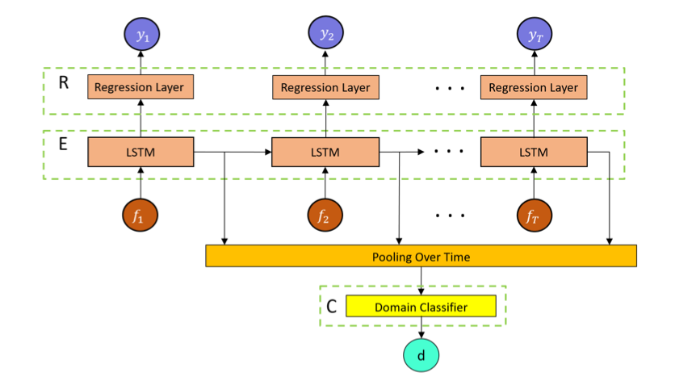
Adversarial Domain Adaption for Multi-Cultural DimensionalEmotion Recognition in Dyadic Interactions
Jinming Zhao, Ruichen Li, Jingjun Liang, Qin Jin
abstract
Cross-cultural emotion recognition has been a challenging research problem in the affective computing
field. In this paper, we present our solutions for the Cross-cultural Emotion Sub-challenge (CES) in
Audio/Visual Emotion Challenge (AVEC) 2019. The aim of this task is to investigate how emotion knowledge
of Western European cultures (German and Hungarian) can be transferred to Chinese culture. Previous studies
have shown that the cultural difference can bring significant performance impact to emotion recognition across cultures.
In this paper, we propose an unsupervised adversar- ial domain adaptation approach to bridge the gap across different
cultures for emotion recognition. The highlights of our complete solution for the CES challenge task include: 1) several
efficient deep features from multiple modalities and the LSTM network to cap- ture the temporal information. 2) several
multimodal interaction strategies to take advantage of the interlocutor's multimodal in- formation. 3) an unsupervised
adversarial adaptation approach to bridge the emotion knowledge gap across different cultures. Our solutions achieve the
best CCC performance of 0.4, 0.471 and 0.257 for arousal, valence and likability respectively on the challenge testing set
of Chinese, which outperforms the baseline system with corresponding CCC of 0.355, 0.468 and 0.041.
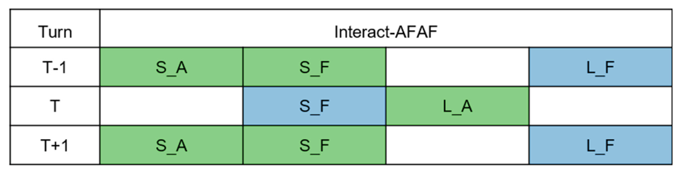
Multimodal Dimensional and Continuous Emotion Recognition in Dyadic Video Interactions
Jinming Zhao, Shizhe Chen, Qin Jin
abstract
Automatic emotion recognition is a challenging task which can make great impact on improving natural human computer interactions.
In dyadic human-human interactions, a more complex interaction scenario, a person's emotion state will be influenced by the
interlocutor's behaviors, such as talking style/prosody, speech content, facial expres- sion and body language. Mutual influence,
a person's influence on the interacting partner's behaviors in a dialog, is shown to be important for predicting the person's emotion
state in previous works. In this paper, we proposed several multimodal interaction strategies to imitate the interactive patterns
in the real scenarios for exploring the effect of mutual influence in continuous emotion prediction tasks. Our experiments based on
the Audio/Visual Emotion Challenge (AVEC) 2017 dataset used in continuous emotion prediction tasks, and the results show that our
proposed multimodal interaction strategy gains 3.82% and 3.26% absolute improvement on arousal and valence respectively. Additionally,
we anal- yse the influence of the correlation between the interactive pairs on both arousal and valence. Our experimental results
show that the interactive pairs with strong correlation significantly outperform the pairs with weak correlation on both arousal and
valence.
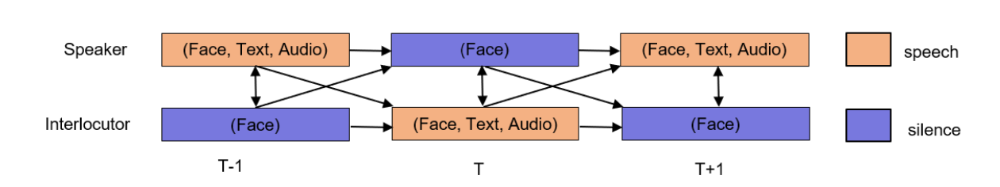
Multi-modal Multi-cultural Dimensional Continues Emotion Recognition in Dyadic Interactions
Jinming Zhao, Ruichen Li, Shizhe Chen, Qin Jin
abstract
Automatic emotion recognition is a challenging task which can make great impact on improving natural human computer
interactions. In this paper, we present our solutions for the Cross-cultural Emotion Sub-challenge (CES) of Audio/Visual
Emotion Challenge (AVEC) 2018. The videos were recorded in dyadic human-human interaction scenarios. In these complicated
scenarios, a person's emotion state will be influenced by the interlocutor's behaviors, such as talking style/prosody, speech
content, facial expression and body language. In this paper, we highlight two aspects of our solutions: 1) we explore multiple
modalities's efficient deep learn- ing features and use the LSTM network to capture the long-term temporal information. 2) we
propose several multimodal interaction strategies to imitate the real interaction patterns for exploring which modality information
of the interlocutor is effective, and we find the best interaction strategy which can make full use of the interlocutor's information.
Our solutions achieve the best CCC performance of 0.704 and 0.783 on arousal and valence respectively on the challenge testing set of
German, which significantly outperform the baseline system with corresponding CCC of 0.524 and 0.577 on arousal and valence, and which
outperform the winner of the AVEC2017 with corresponding CCC of 0.675 and 0.756 on arousal and valence. The experimental results show
that our pro- posed interaction strategies have strong generalization ability and can bring more robust performance.
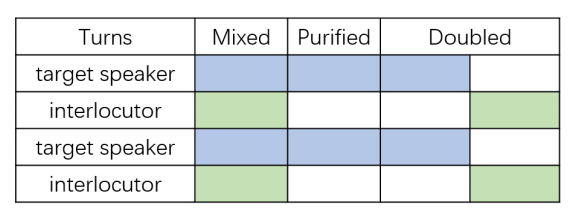
Multimodal Multi-task Learning for Dimensional and Continuous Emotion Recognition
Shizhe Chen, Qin Jin, Jinming Zhao and Shuai Wang
abstract
Automatic emotion recognition is a challenging task which can make great impact on improving natural human computer
interactions. In this paper, we present our effort for the Af- fect Subtask in the Audio/Visual Emotion
Challenge (AVEC) 2017, which requires participants to perform continuous e- motion prediction on three affective
dimensions: Arousal, Valence and Likability based on the audiovisual signals. We highlight three aspects of our
solutions: 1) we explore and fuse different hand-crafted and deep learned features from all available modalities
including acoustic, visual, and textual modalities, and we further consider the interlocutor influence for the acoustic
features; 2) we compare the effectiveness of non-temporal model SVR and temporal model LSTM-RNN and show that the LSTM-RNN
can not only alleviate the feature engineering efforts such as construction of contextual features and feature delay, but
also improve the recognition performance significantly; 3) we apply multi-task learning strategy for collaborative prediction
of multiple emotion di- mensions with shared representations according to the fact that different emotion dimensions are
correlated with each other. Our solutions achieve the CCC of 0.675, 0.756 and 0.509 on arousal, valence, and likability
respectively on the challenge testing set, which outperforms the baseline system with corresponding CCC of 0.375, 0.466, and
0.246 on arousal, valence, and likability.
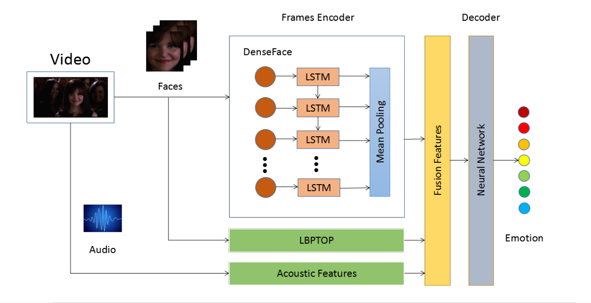
Emotion recognition with multimodal features and temporal models
Shuai Wang, Wenxuan Wang, Jinming Zhao, Shizhe Chen, Qin Jin, Shilei Zhang
abstract
This paper presents our methods to the Audio-Video Based Emotion Recognition subtask in the 2017
Emotion Recognition in the Wild (EmotiW) Challenge. The task aims to predict one of the seven basic emotions
for short video segments. We extract different features from audio and facial expression modalities. We also
explore the temporal LSTM model with the input of frame facial features, which improves the performance of the non-temporal model.
The fusion of different modality features and the temporal model lead us to achieve a 58.5% accuracy on the testing set,
which shows the effectiveness of our methods.
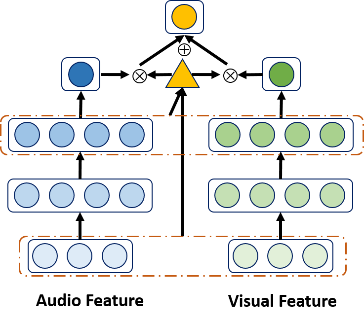
Multi-modal Conditional Attention Fusion for Dimensional Emotion Prediction
Shizhe Chen, Qin Jin
abstract
Continuous dimensional emotion prediction is a challenging task where the fusion of various modalities usually achieves
state-of-the-art performance such as early fusion or late fusion. In this paper, we propose a novel multi-modal fusion
strategy named conditional attention fusion, which can dynamically pay attention to different modalities at each time step.
Long-short term memory recurrent neural networks (LSTM-RNN) is applied as the basic uni-modality model to capture long time
dependencies. The weights assigned to different modalities are automatically decided by the current input features and recent
history information rather than being fixed at any kinds of situation. Our experimental results on a benchmark dataset AVEC2015
show the effectiveness of our method which outperforms several common fusion strategies for valence prediction.
Interestingness / Memorability
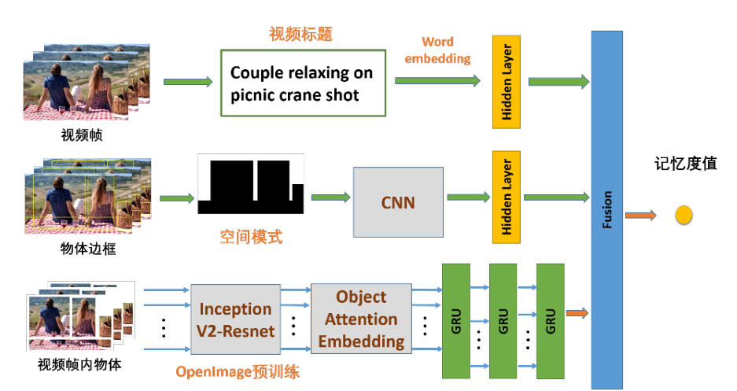
基于全局和局部信息的视频记忆度预测
Video Memorability Prediction Based on Global and Local Information
Shuai Wang, Weiying Wang, Shizhe Chen, Qin Jin
abstract
Memorability of a video is a metric to describe that how memorable the video is. Memorable videos contain huge values
and automatically predicting the memorability of large numbers of videos can be applied in various applications including
digital content recommendation, advertisement design, education system and so on. In this paper, we propose a global and local
information based framework to predict video memorability. The framework consists of three components, namely global context
representation, spatial layout and local object attention. The experimental results of the global context representation and
local object attention are remarkable, and the spatial layout also contributes a lot to the prediction. Finally, our model improves
the performances of our baseline of MediaEval 2018 Media Memorability Prediction Task.
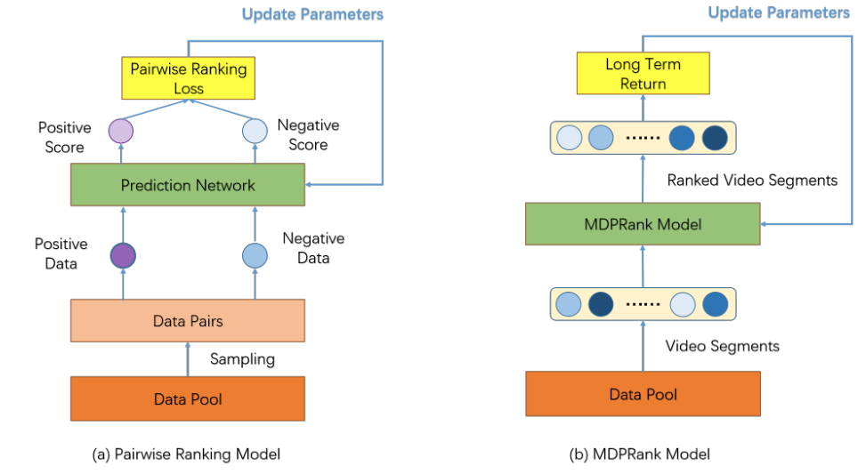
Video interestingness prediction based on ranking model
Shuai Wang, Shizhe Chen, Jinming Zhao, Qin Jin
abstract
Predicting the interestingness of videos can greatly improve people's satisfactions in many applications such as
video retrieval and recommendations. In order to obtain less subjective interestingness annotations, partial pairwise
comparisons among videos are firstly annotated and all videos are then ranked globally to generate the interestingness
value. We study two factors in interestingness prediction, namely comparison information and evaluation metric optimization.
In this paper, we propose a novel deep ranking model which simulates the human annotation procedures for more reliable
interestingness prediction. To be specific, we extract different visual and acoustic features and sample different
comparison video pairs by different strategies such as random and fixed-distance. The richer information of human pairwise
ranking annotations are used as a richer guidance compared with the plain interestingness value to train our networks.
In addition to comparison information, we also explore reinforcement ranking model which directly optimizes the evaluation
metric. Experimental results demonstrate that the fusion of the two ranking models can make better use of human labels
and outperform the regression baseline. Also, it reaches the best performance according to the results of MediaEval 2017
interestingness prediction task.
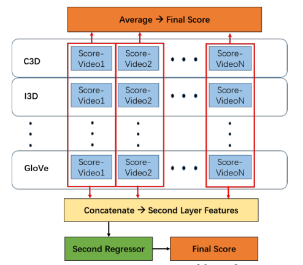
Ruc at mediaeval 2018 Visual and textual features exploration for predicting media memorability
Shuai Wang, Weiying Wang, Shizhe Chen, Qin Jin
abstract
Predicting the memorability of videos has great values in various applications including content recommendation,
advertisement de- sign and so on, which can bring convenience to people in everyday life, and profit to companies.
In this paper, we present our methods in the 2018 Predicting Media Memorability Task. We explored some deeply-learned
visual features and textual features in regression models to predict the memorability of videos.
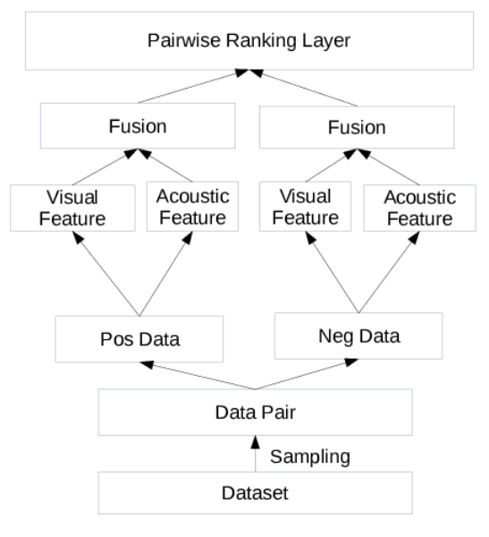
RUC at mediaeval 2017 Predicting media interestingness task
Shuai Wang, Weiying Wang, Shizhe Chen, Qin Jin
abstract
Predicting the interestingness of images or videos can greatly improve people's satisfaction in many applications, such
as video retrieval and recommendations. In this paper, we present our methods in the 2017 Predicting Media Interestingness
Task. We propose deep ranking model based on aural and visual modalities which simulates the human annotation procedures
for more reliable interestingness prediction.
Audio Events
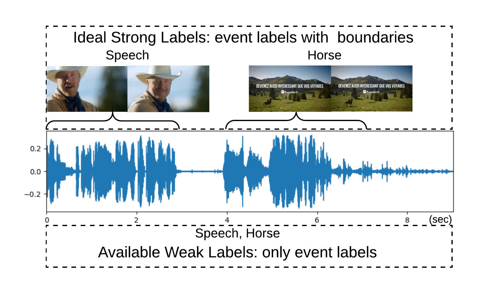
Class-aware Self-attention for Audio Event Recognition
Shizhe Chen, Jia Chen, Qin Jin, Alexander Hauptman
abstract
Audio event recognition (AER) has been an important research problem with a wide range of applications. However, it is very
challenging to develop large scale audio event recognition models. On the one hand, usually there are only "weak" labeled
audio training data available, which only contains labels of audio events without temporal boundaries. On the other hand,
the distribution of audio events is generally long-tailed, with only a few positive samples for large amounts of audio
events. These two issues make it hard to learn discriminative acoustic features to recognize audio events especially for
long-tailed events. In this paper, we propose a novel class-aware self-attention mechanism with attention factor sharing
to generate discriminative clip-level features for audio event recognition. Since a target audio event only occurs in part
of an entire audio clip and its corresponding temporal interval varies, the proposed class-aware self-attention approach
learns to highlight relevant temporal intervals and to suppress irrelevant noises at the same time. In order to learn
attention patterns effectively for those long-tailed events, we combine both the domain knowledge and data driven strategies
to share attention factors in the proposed attention mechanism, which transfers the common knowledge learned from other
similar events to the rare events. The proposed attention mechanism is a pluggable component and can be trained end-to-end
in the overall AER model. We evaluate our model on a large-scale audio event corpus "Audio Set" with both short-term and
long-term acoustic features. The experimental results demonstrate the effectiveness of our model, which improves the overall
audio event recognition performance with different acoustic features especially for events with low resources. Moreover,
the experiments also show that our proposed model is able to learn new audio events with a few training examples effectively
and efficiently without disturbing the previously learned audio events.